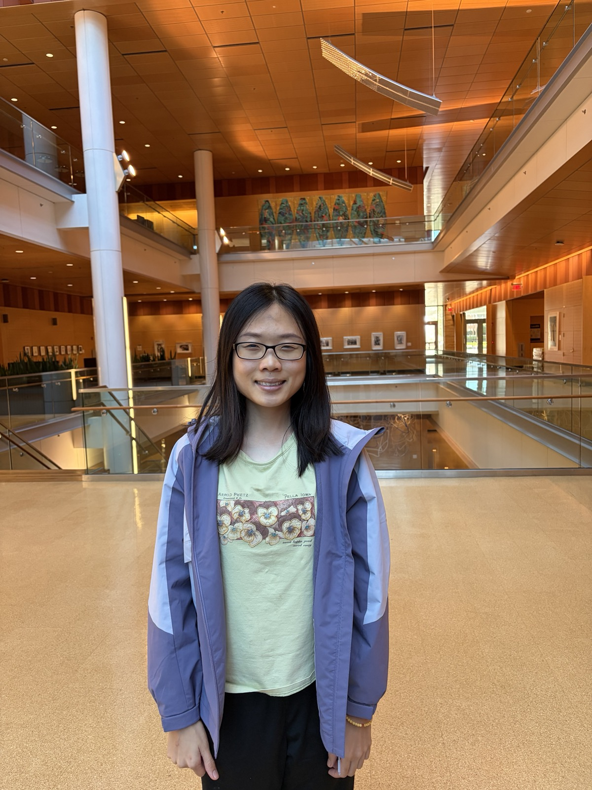

Yuxin Lin

University of Michigan
I am a Postdoctoral Assistant Professor in the Department of Mathematics at the University of Michigan , where I work with Michael Zieve .
I completed my Ph.D. in Mathematics at Caltech in 2026 under the supervision of Elena Mantovan. My dissertation is titled Ring of Automorphic Forms on Certain Shimura Varieties.
I am interested in number theory and algebraic geometry. My research includes arithmetic geometry, moduli spaces in positive characteristic, Shimura varieties, algebraic geometry over finite fields, and applications to coding theory.
I completed my undergraduate studies in mathematics at the University of Notre Dame.
I speak Mandarin, English, Japanese, Cantonese, and Teochew.
Research
My research interests include:
- Arithmetic Geometry. I study arithmetic and geometric properties of curves, abelian varieties, and Shimura varieties in positive characteristic. My work includes the stratification of moduli spaces of curves by discrete invariants, p-divisible groups associated to abelian varieties, and the structure of rings of automorphic forms on Shimura varieties.
- Algebraic Geometry over Finite Fields and Coding Theory. I study questions concerning the maximum number of rational points in intersections of hypersurfaces over finite fields. These problems are closely related to generalized Hamming weights of projective Reed-Muller codes. My recent work studies versions of the largest intersection problem in which the intersection is allowed to have prescribed dimension.
- Arithmetic Statistics and Discrete Mathematics. I have worked on statistical questions concerning number rings, numerical semigroups, generalized numerical semigroups, and related discrete structures.
Publications
Published Papers
- Largest zero-dimensional intersection of r degree d hypersurfaces in Pm (with D. Singhal). Journal of Pure and Applied Algebra , 2026. DOI
- The p-rank stratification of the moduli space of double covers of a fixed elliptic curve (with K. Chang, D. Dragutinovic, S. Groen, D. Singhal, and N. Tallaj). Nagoya Mathematical Journal , 2026. DOI
- On a conjecture of Beelen, Datta and Ghorpade for the number of points of varieties over finite fields (with D. Singhal). European Journal of Mathematics , 2025. DOI
- Abelian covers of P1 of p-ordinary Ekedahl-Oort type (with E. Mantovan and D. Singhal). International Mathematics Research Notices , 2024. DOI
- Density questions in rings of the form OK[γ] ∩ K (with D. Singhal). International Journal of Number Theory , 2024. DOI
- Primes in denominators of Algebraic Numbers (with D. Singhal). International Journal of Number Theory , 2024. DOI
- Frobenius allowable gaps of Generalized Numerical Semigroups (with D. Singhal). The Electronic Journal of Combinatorics , 2022. DOI
- Density of Numerical sets associated to a Numerical semigroup (with D. Singhal). Communications in Algebra , 2021. DOI
- The limiting spectral measure for an ensemble of generalized checkerboard matrices (with F. Chen, J. Yu, and S. J. Miller). The PUMP Journal of Undergraduate Research , 2021. DOI
Preprints
- A k-Dimensional Version of the Largest Intersection Problem . 2026. arXiv:2608.17771
- Non-μ-ordinary Newton polygons in the Torelli Locus (with E. Mantovan and D. Singhal). 2024. arXiv:2406.09632
Dissertation
- Ring of Automorphic Forms on Certain Shimura Varieties . Ph.D. dissertation, California Institute of Technology, 2026. Thesis
Teaching & Mentoring
California Institute of Technology
Instructor, 2022–2024
- MA 8: Problem Solving in Calculus (Fall 2022, Fall 2024). Designed and delivered lectures, course materials, homework, syllabus, and the Canvas course site for a hands-on problem-solving course accompanying introductory calculus.
- MA 1D: Calculus Series (Winter 2023). Taught a follow-up course covering complex numbers, Taylor polynomials, and infinite series.
Teaching Assistant, 2021–2026
- Undergraduate courses in calculus, linear algebra, multivariable calculus, and probability and statistics.
- Graduate courses in algebraic topology and abstract algebra.
- Led recitation sessions, designed problem sets, graded assignments, held office hours, and helped prepare students for qualifying examinations.
PMA Mentorship Program
- Mentored an incoming graduate student through her first year, providing support with coursework, research, and adapting to graduate life at Caltech.
Preliminary Arizona Winter School
- Problem Session Leader, 2023. Assisted Lassina Dembélé's course on Abelian Varieties over Finite Fields by designing problem sets and leading weekly problem-solving and discussion sessions.
University of Notre Dame
- Tutor for the Math Help Room and Math Bunker (2019–2020), assisting students with calculus and linear algebra.
- Grader for Graduate Algebra I and Discrete Fourier & Wavelet (2019–2020).
- Helper in Math Circle (2019).
Ross Mathematics Program
- Junior Counselor (2018), mentoring high school students in an intensive summer mathematics program.
Mentoring & Outreach
- Mentor for the PMA Mentorship Program at Caltech (2024).
- Problem Session Leader at Preliminary Arizona Winter School (2023).
- Math Help Room and Math Bunker Tutor, University of Notre Dame (2019–2020).
- Group Activity Leader at High Point Academy (2026).
- Volunteer at Women in STEM Science Day at Caltech (2026).
- Member of the PMA Graduate Student Advisory Board, Caltech (2025–2026).
- Co-organizer, with Elizabeth Xiao, of the weekly Mathematics Department Game Night at Caltech (2025–2026).
Honors & Awards
- Scott Russell Johnson Prize for Excellence in Graduate Studies, Caltech, 2024.
- Scott Russell Johnson Prize for Excellence in First-Year Graduate Studies, Caltech, 2022.
- Senior G.E. Prize for Honors Mathematics Majors, University of Notre Dame, 2021.
- Waldemar J. Trjitzinsky Memorial Award, American Mathematical Society, 2019.
Contact
Email: bennylin@umich.edu
Office: 1858 East Hall
Department of Mathematics
University of Michigan
530 Church Street
Ann Arbor, MI 48109